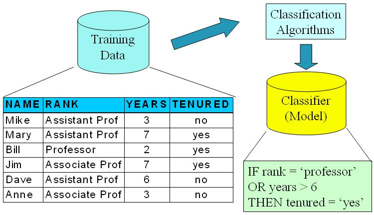

Data Mining 笔记之Classification
一、概念
监督式学习VS非监督式学习
Supervised learning (classification): The training data (observations, measurements, etc.) are accompanied by labels indicating the class of the observations. New data is classified based on the training set.
Unsupervised learning (clustering):The class labels of training data is unknown Given a set of measurements, observations, etc. with the aim of establishing the existence of classes or clusters in the data –Jiawei Han
-
监督式学习：提供了训练元组的类标号，通过分析已知数据，得到一个分类模型，用来确定其它的对象属于哪个类别。
-
非监督式学习：不依赖有类标号的训练实例
分类Classification
predicts categorical class labels (discrete or nominal), classifies data (constructs a model) based on the training set and the values (class labels) in a classifying attribute and uses it in classifying new data。
预测分类表示，通过分析训练集中数据的属性来进行构建一个模型来确定新的数据属于哪个分类。
二、步骤
Model construction模型建立。
每个训练集的的元组都假设属于某个定义好的有分类标签的分类；这个模型作表现上可以是类规则，决策树或算术公式。

Model usage 模型使用
评估模型的准确性。使用测试集(test sample)已知分类标签的样本和模型的分类结果进行比较。准确率是模型测试集合test set samples中正确分类的比率。测试集(test sample)不能和训练集(training set)相关。
如果评估结果可以接受，则使用模型来对新的数据进行分类。
{kind=link}
三、分类算法类型：
- Decision Tree Induction
- Bayes Classification Methods
- Rule-Based Classification
完